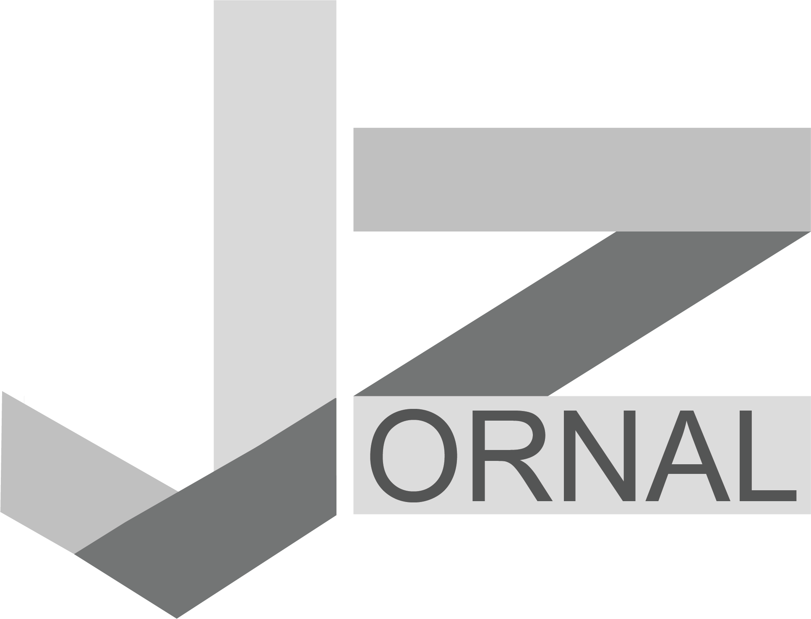

⚡ INFORMAÇÃO INTELIGENTE PARA QUEM NÃO TEM TEMPO A PERDER
Chega de abrir dez abas diferentes para tentar se informar. O JornalZ é o seu portal inteligente que reúne os principais acontecimentos do Brasil e do mundo em um só lugar, com curadoria especializada para quem busca qualidade, profundidade e agilidade.
Nossa equipe e algoritmos trabalham juntos para selecionar as notícias mais relevantes do dia. Nada de exageros sensacionalistas ou informações irrelevantes. Você recebe o que realmente importa, de fontes confiáveis, em um layout minimalista e direto.
Nossa equipe e algoritmos trabalham juntos para selecionar as notícias mais relevantes do dia. Você recebe o que realmente importa, de fontes confiáveis, sem ruído.
Esqueça telas poluídas por anúncios popping, popunders e banners intermináveis. Layout minimalista, direto e focado no que interessa: a informação de qualidade.
Escolha seus temas preferidos: política, economia, tecnologia, esportes, cultura, ciência. O JornalZ aprende com suas preferências e entrega um feed sob medida.
Comece o dia lendo uma notícia e, com um clique, mergulhe em um livro digital completo na Estante Digital ou aprofunde-se com artigos acadêmicos no NEWS Periódicos.
Acompanhe os desdobramentos políticos em Brasília, as inovações do Vale do Silício, os resultados do futebol europeu e os impactos da economia global no seu bolso.
Enquanto nossa fibra entrega 1000 megas de velocidade, o JornalZ entrega a informação mais rápida e relevante. Perfeito para quem precisa estar atualizado sem perder tempo.
Não é uma assinatura extra, não é um custo adicional. O JornalZ é mais um presente da Netmax para você, que já faz parte da nossa família.
Se você já é assinante, o mundo da informação inteligente te espera.
Assine agora o plano de 1000 megas por apenas R$ 114,90 e leve todos os benefícios inclusos: Netmax TV, Estante Digital, NEWS Periódicos e JornalZ!

+